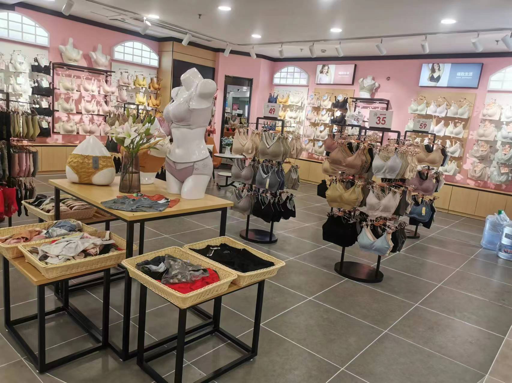
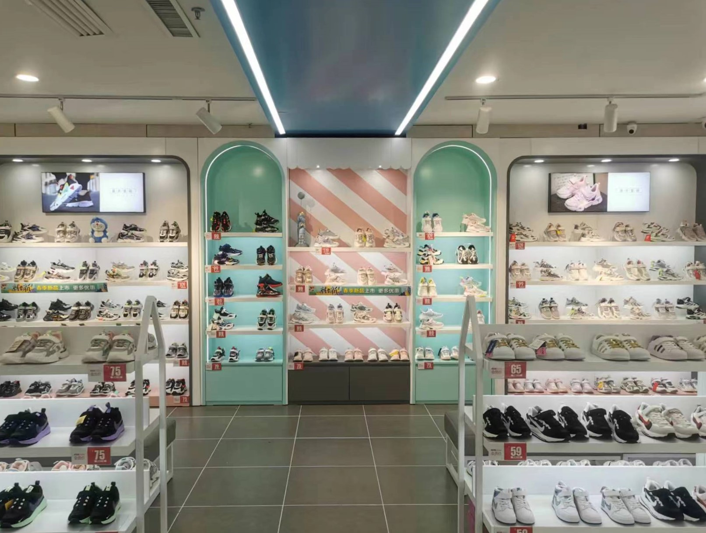
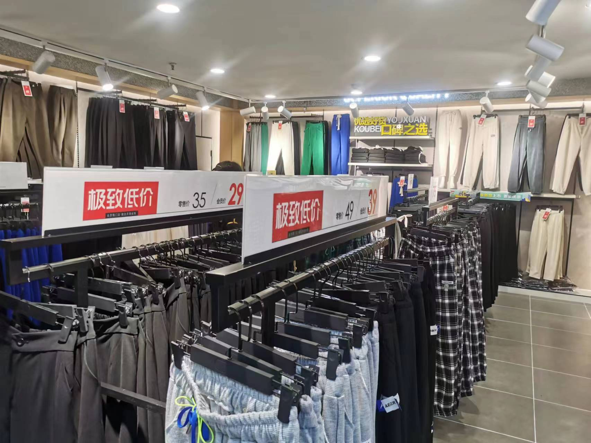
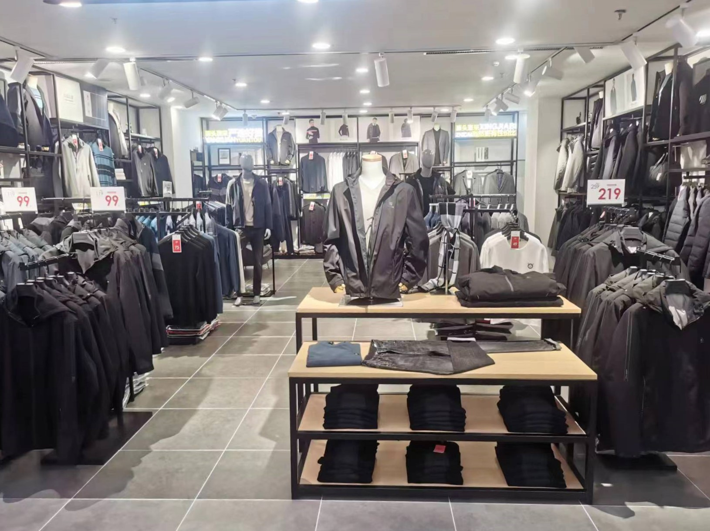
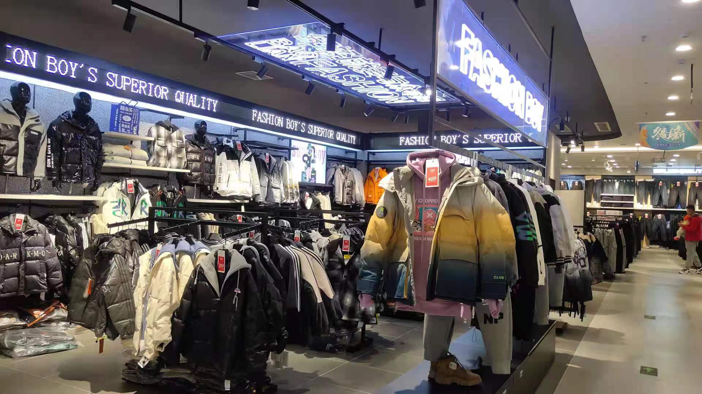

时尚之旅，乐在其中
旅乐，与时尚同行
《旅乐》品牌以其独特的设计理念，为追求个性与舒适的消费者带来了全新的穿着体验。我们的产品线涵盖了服装、婴儿全套衣、体操服等，每一件作品都融入了时尚元素与实用性的完美结合。自2012年成立以来，我们不断探索与创新，致力于让每一位顾客在享受时尚的同时，也能体验到穿着的舒适与自在。
在时尚的海洋中，有这样一股清新的潮流，它源自对美好生活的无限向往。《旅乐》品牌，诞生于2012年的夏天，由一群热爱生活、追求品质的设计师共同创立。他们相信，服装不仅仅是外在的装饰，更是内心世界的表达。《旅乐》的诞生，正是为了满足人们对美好生活的向往，让每一位穿着者都能在旅途中找到属于自己的快乐。

随着时间的流逝，《旅乐》品牌逐渐在时尚界崭露头角。从最初的服装系列，到后来的婴儿全套衣、体操服，再到专业的运动装备，我们的产品线不断丰富，满足不同消费者的需求。2013年，品牌成功注册，标志着《旅乐》正式迈入了品牌化发展的新阶段。我们坚持以创新为驱动，以品质为核心，不断为消费者带来更加多元化和个性化的穿着体验。

《旅乐》品牌始终坚持“时尚、舒适、品质”三大核心理念。我们相信，时尚不仅仅是一种外在的装饰，更是一种生活态度。舒适，是我们对穿着体验的不懈追求；品质，是我们对产品工艺的严格要求。《旅乐》的每一件产品，都承载着我们对美好生活的理解和追求，让每一位穿着者都能在旅途中感受到《旅乐》的温暖与关怀。

作为一家有社会责任感的品牌，《旅乐》在追求商业成功的同时，也不忘回馈社会。我们积极参与公益活动，关注环境保护，努力实现可持续发展。《旅乐》承诺，将通过我们的产品和服务，传递正面的价值观，为构建和谐社会贡献自己的一份力量。选择《旅乐》，不仅是选择了一种时尚的生活方式，更是选择了一种有责任感的生活态度。

展望未来，《旅乐》品牌将继续秉承初心，不断探索和创新。我们将持续关注消费者的需求变化，紧跟时尚潮流，推出更多符合时代精神的新产品。同时，我们也将加强品牌建设，提升品牌影响力，让《旅乐》成为更多人生活中不可或缺的一部分。让我们一起期待，《旅乐》在未来的旅途中，能够带给世界更多的惊喜和感动。

《旅乐》品牌自2012年成立，以时尚、舒适、品质为核心理念，提供多元化服装与运动装备。2013年成功注册，享有至2033年的专用权，致力于成为消费者信赖的时尚生活伙伴。
地址: 河北省石家庄市长安区中山东路11号乐汇城1-2-1208
电话: (0311)6618-7168